DALL-E background generation — iterating toward the right composition and mood.
Started: 2026-10-16 · Status: In progress
Goal
A single painted background scene for the lighthouse at Innsmouth Bay. The sprites
(eye cloud, lighthouse) overlay on top. Later this becomes parallax layers, but first
we lock down the composition and mood as one image.
Key ratios we're working out
Cliff: ~1/3 scene height, ~1/3 scene width, bottom-right
Ocean + sky: fills the rest — vast, desolate
Lighthouse: centered on the cliff ledge, small relative to the scene
Rocks: scattered in the water with teal wave spray — important detail, keep these
v1 — first pass
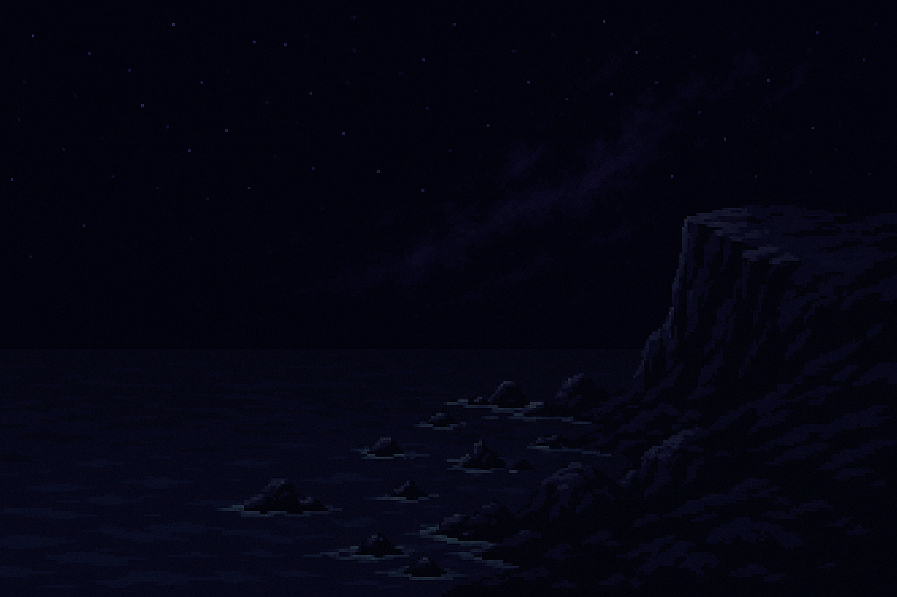
Prompt (click to copy)
Pixel art night scene, 16:9 wide. Dark ocean and sky fill the left two-thirds. A rocky coastline enters from the bottom-right, rising to a cliff. Horizon at 40% from top. Craggy rocks scattered in dark water. Sky is void black at top fading to deep indigo with subtle dark violet nebula clouds. Ocean is dark navy with faint teal shimmer near rocks. All blues and purples only — no warm colors except tiny pale stars. Desolate, Lovecraftian, edge of the world. Clean pixel art, limited palette, no anti-aliasing.
gpt-image-11536x1024
Composition is right but more painterly than pixel art. Very dark.
v2 — pixel art emphasis
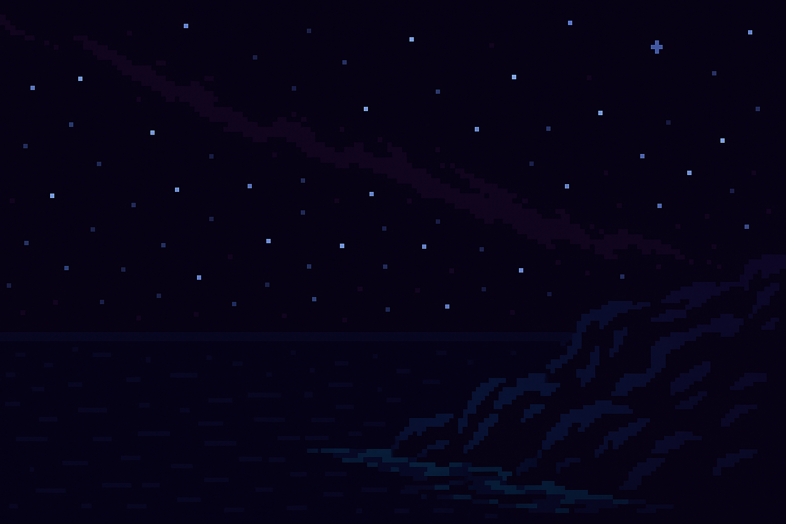
Prompt (click to copy)
Retro pixel art, 8-bit style, visible pixels, limited color palette. Night coastal scene. Dark ocean fills left two-thirds, rocky cliff enters from bottom-right. Void black sky fading to deep indigo (#111138). Dark violet (#2d1b69) nebula wisps. Navy blue ocean (#0a0a1a). Faint teal (#0d7377) shimmer on water near rocks. Scattered tiny white stars. Rocky coastline in dark blue-black stone. No lighthouse, no buildings — just landscape. Desolate, ominous mood. Strictly pixel art with hard edges, no gradients, no anti-aliasing, blocky pixels visible.
gpt-image-11536x1024
Added "retro", "8-bit", "visible pixels", "hard edges", "blocky". Hex codes in prompt.
Much closer to pixel art. Right mood — but cliff too tall, scene too dark overall.
v3 — shorter cliff
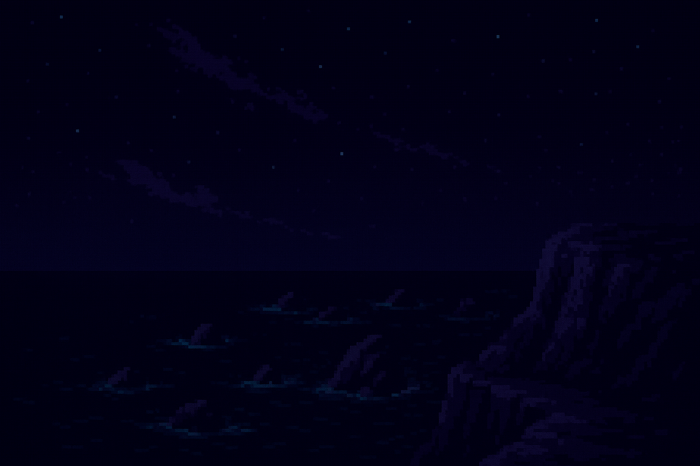
Prompt (click to copy)
Retro pixel art, 8-bit style, visible pixels, limited color palette. Night coastal scene. Dark ocean fills the left two-thirds, a SHORT rocky cliff enters from the bottom-right — the cliff is small, only occupying the bottom-right corner, about one-quarter of the scene. Scattered craggy sea rocks and rock outcrops in the water with teal (#0d7377) wave effects around them. Void black sky fading to deep indigo (#111138). Dark violet (#2d1b69) nebula wisps. Navy blue ocean (#0a0a1a). Faint teal shimmer on water near rocks. Scattered tiny white stars — sparse. The scene is SLIGHTLY LIGHTER than pitch black — deep navy and indigo tones. No lighthouse, no buildings — just landscape. Desolate, ominous mood. Strictly pixel art with hard edges, no gradients, no anti-aliasing, blocky pixels visible.
gpt-image-11536x1024
Cliff shorter. Rocks with wave effects kept. Still too tall — needs to be ~1/3 height, ~1/3 width.
Foreshortening not dramatic enough compared to v2.
v4 — 1/3 cliff, dramatic angle
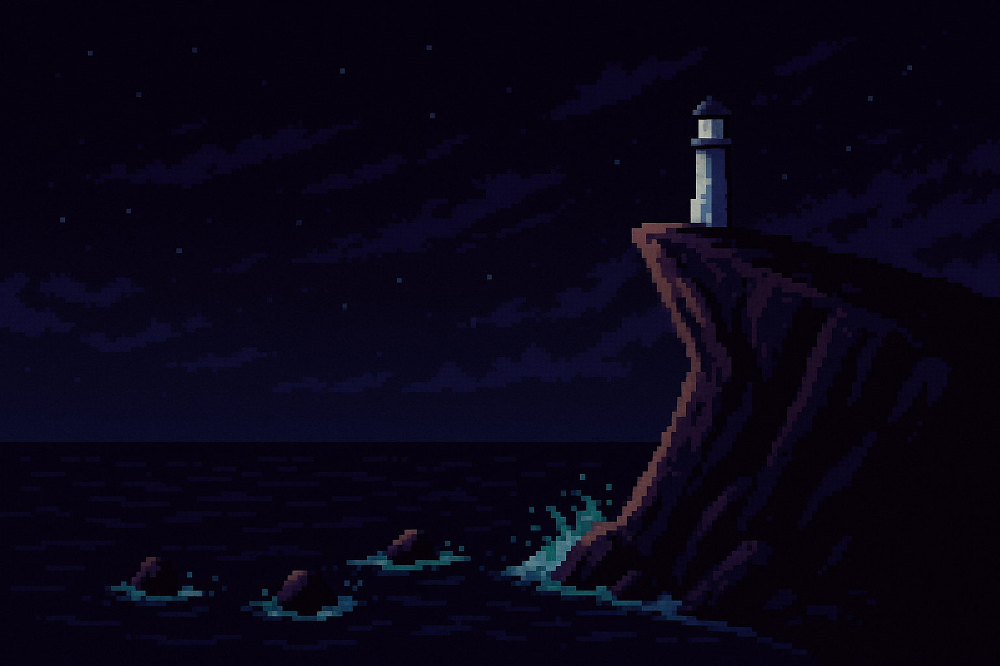
Prompt (click to copy)
Retro pixel art, 8-bit style, visible pixels, limited color palette. Night coastal scene. Dark ocean fills most of the scene. A rocky cliff enters from the BOTTOM-RIGHT corner — the cliff is SMALL, occupying only the bottom-right area: about ONE-THIRD of the scene height and ONE-THIRD of the scene width. The cliff has a dramatic foreshortened angle — steep, angular, leaning into the frame from the right edge. Low camera angle looking up at the cliff gives it drama. A flat ledge at the top of the cliff where a lighthouse would be centered. Scattered craggy sea rocks in the water with teal (#0d7377) wave spray effects around them — keep these, they look great. Void black sky at top fading to deep indigo (#111138). Dark violet (#2d1b69) nebula wisps. Navy blue ocean (#0a0a1a). Scattered tiny white stars — sparse. Scene is slightly lighter than pitch black — deep navy and indigo tones. Desolate, ominous. Strictly pixel art with hard edges, no anti-aliasing, blocky pixels visible.
gpt-image-11536x1024
Target ratios: cliff 1/3 height, 1/3 width. More dramatic foreshortened angle.
DALL-E added a lighthouse for scale reference — useful for placement planning.
v5 — pixel-count constraints, no lighthouse
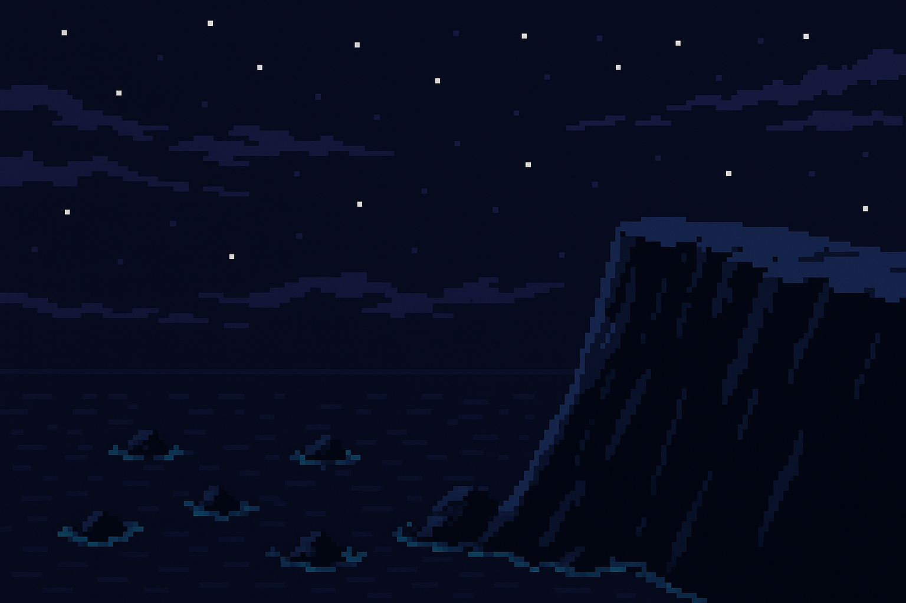
Prompt (click to copy)
Retro pixel art, 8-bit style, visible pixels, hard edges, blocky pixels. Night coastal scene, 1536x1024 pixels. The image is divided into regions: the rocky cliff ONLY appears in the bottom-right 512x340 pixel area. The remaining area is ocean and sky. NO lighthouse, NO buildings, NO structures — ONLY bare rock. The cliff is a steep angular rocky outcrop entering from the right edge, dramatic foreshortened perspective. Dark blue-black jagged rock (#0a0a1a, #111138). Flat ledge at the top of the cliff. Scattered craggy sea rocks in the ocean with faint teal (#0d7377) wave spray. Dark navy ocean (#0a0a1a). Deep indigo sky (#111138) with dark violet (#2d1b69) wisps. Sparse tiny white stars. Slightly lighter than pitch black. Desolate, ominous. Strictly pixel art, no anti-aliasing.
gpt-image-11536x1024
Used pixel-count constraints (512x340 box) instead of fractions. No lighthouse added this time.
Cliff still slightly tall — may need to go even smaller. No browns — palette is correct (blues, black, teal).
The dramatic silhouette is good — steep angular point works for the composition.
v6 — strict bottom-third cliff
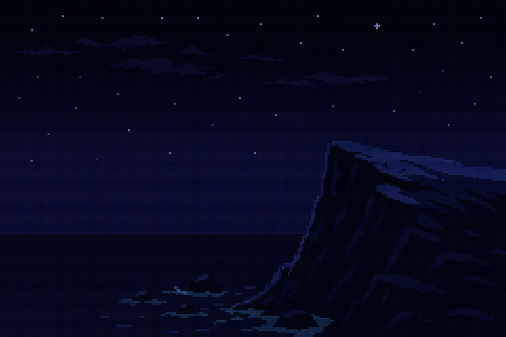
⅔ line — cliff must stay below
Prompt (click to copy)
Retro pixel art, 8-bit style, visible pixels, hard edges, blocky pixels. Night coastal scene, 1536x1024 pixels. STRICT LAYOUT: the top TWO-THIRDS of the image (top 680 pixels) is ONLY sky and ocean horizon — no rock, no cliff, no land in the top two-thirds at all. The sky is dark void black (#050510) at the very top, fading to deep indigo (#111138). A few dark violet (#2d1b69) wispy clouds. Sparse tiny white stars. The horizon line sits at about 66% from the top. Below the horizon is dark navy ocean (#0a0a1a). The rocky cliff ONLY appears in the BOTTOM ONE-THIRD (bottom 340 pixels), entering from the right edge. Steep angular rocky outcrop, dramatic foreshortened silhouette in dark blue-black (#0a0a1a, #111138, #1a1a50). Flat ledge near the top of the cliff. Scattered small sea rocks in the water with faint teal (#0d7377) wave spray. NO lighthouse, NO buildings, NO structures, NO browns — ONLY blues, blacks, indigo, teal. Desolate, ominous. Strictly pixel art, no anti-aliasing.
gpt-image-11536x1024
Cliff respects the bottom-third boundary. Top 2/3 is sky and ocean. No lighthouse, no browns.
Dramatic angular silhouette. Good flat ledge for lighthouse placement. Pixel counts in prompt helped enforce layout.
v7 — separate elements, composited
Key learning: DALL-E can't enforce spatial constraints in a full scene. Instead, generate
each element separately and composite with CSS. We control exact size and position.
Standalone cliff
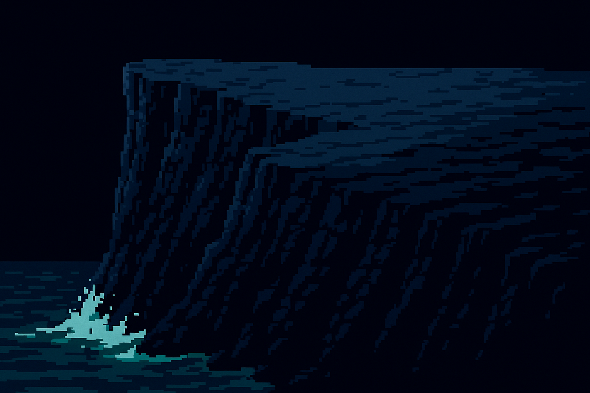
1536x1024 (3:2), v3 — wider plateau, at 50%
Prompt (click to copy)
Retro pixel art, 8-bit style, visible pixels, hard edges, blocky pixels. A rocky cliff FILLING THE ENTIRE IMAGE. The cliff enters from the right side, steep angular dramatic foreshortened silhouette. Dark blue-black jagged rock (#0a0a1a, #111138, #1a1a50). Pixel texture showing rocky layers and cracks. A flat ledge at the top-right where a lighthouse could stand. The cliff slopes down dramatically to the left side. Teal (#0d7377) wave spray at the base of the cliff where ocean meets rock. The left side and top of the image where there is no rock should be solid black (#000000). NO lighthouse, NO buildings, NO structures — ONLY bare rock and wave spray. ONLY blues, blacks, indigo, teal — NO browns, NO grays, NO warm colors. Desolate, ominous. Strictly pixel art, no anti-aliasing.
gpt-image-11024x1024
Composite — CSS ocean/sky + cliff at golden ratio
Golden ratio split: 1/φ ≈ 38.2%. Cliff zone is 38.2% height × 38.2% width — slightly
larger than 1/3, more visually balanced.
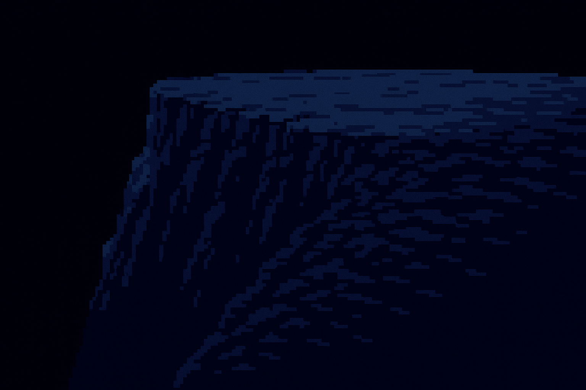
Cliff at golden ratio (38.2%) instead of 1/3 (33.3%). Aspect ratio preserved with object-fit:contain.
Ocean and sky are CSS for now — will be replaced with separate DALL-E layers for parallax.
Next: generate ocean layer and sky layer separately. Add sea rocks as another layer.
Layer catalog
Individual layers for compositing. All on black backgrounds for lighten-blend stacking.
Each layer is independently tunable — regenerate one without affecting the others.
Ocean texture
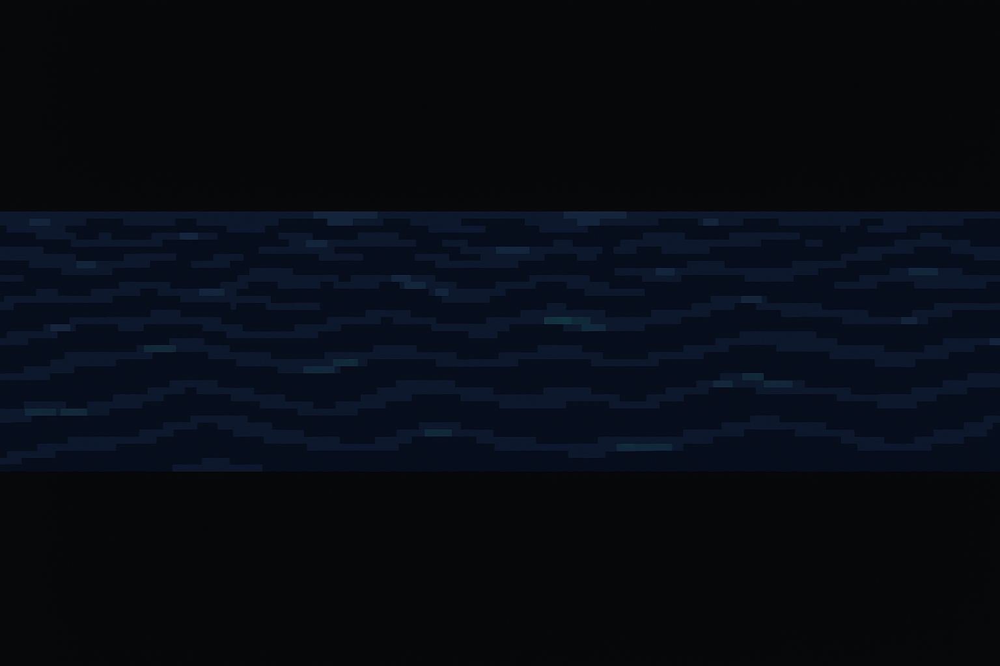
Wave texture band. Height configurable via CSS — stretch to fill ocean area.
Sea rocks
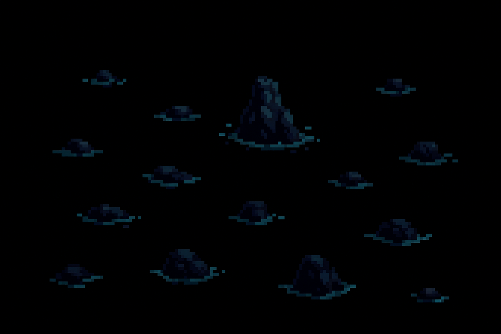
Scattered rock outcrops with teal wave splash. Lighten blend over ocean.
Clouds — far
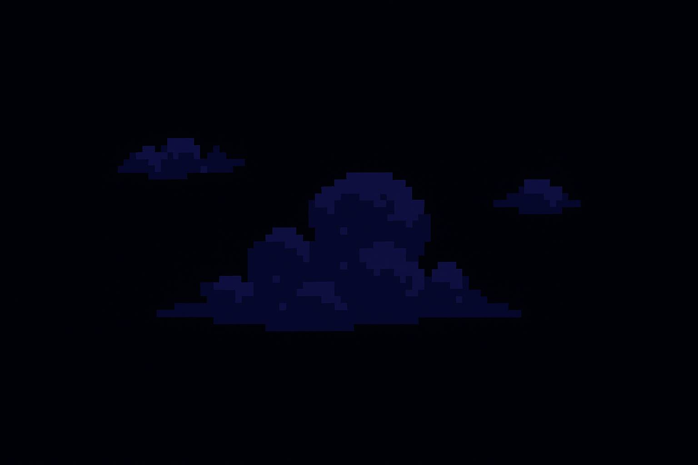
Small wispy clouds, high and distant. Cumulonimbus silhouettes matching the eye cloud.
Clouds — mid
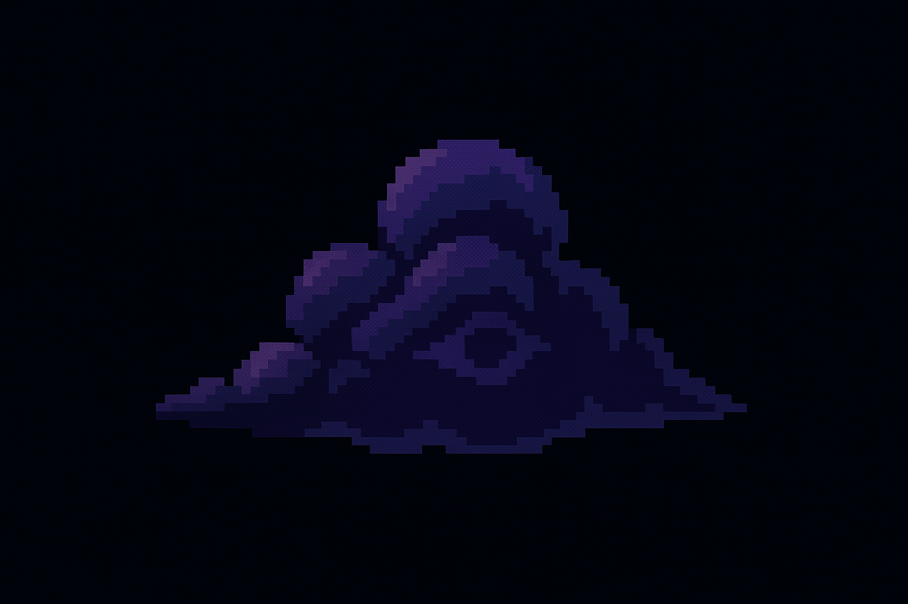
Medium cloud with eye-like shape. Could host the cosmic eye sprite.
Clouds — near
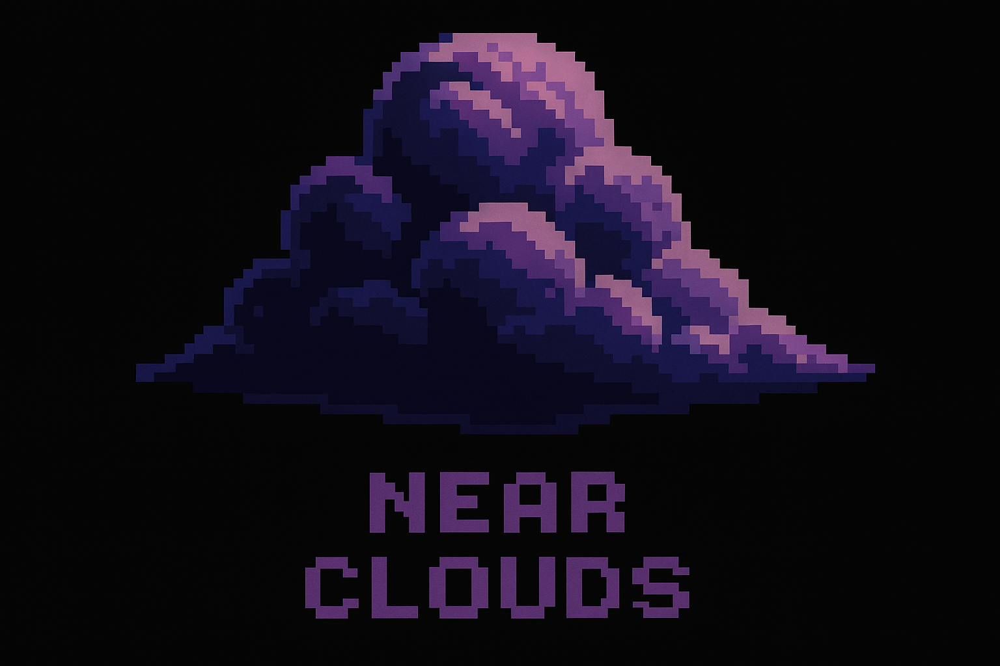
Large looming cloud. Note: has baked-in text artifact — regen needed. Shape and style are right.
Cliff (v4, no waves)
Wide plateau, dramatic face. Bare rock — waves come from ocean layer.
Full composite — all layers
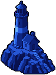
All layers composited. Stack order: sky gradient → far clouds → mid cloud → ocean color → ocean texture → sea rocks → cliff → sprites.
Each layer is independently replaceable. Sprite positions are approximate — tune after locking layers.
Learnings
DALL-E can't enforce spatial constraints. Fractions ("1/3 of the scene") and pixel counts ("bottom 340 pixels") are both unreliable. The model understands composition loosely but doesn't obey strict boundaries. Generate elements separately and composite with CSS.
Separate elements, composite yourself. Generate each layer independently (cliff, ocean, rocks, clouds, sky) on solid black backgrounds. Stack with mix-blend-mode: lighten — black becomes transparent. This gives exact control over size, position, and aspect ratio.
Match aspect ratios. A square cliff image (1024x1024) doesn't fill a 3:2 zone properly. Generate each element at the same aspect ratio as the final scene so object-fit:cover works without distortion.
Golden ratio for proportions. 38.2% (1/φ) is a more balanced split than 1/3 (33.3%) for the cliff zone. But 50% ended up looking better — test visually, don't just calculate.
Lock the game aspect ratio. All layers should share one aspect ratio (currently 3:2 via 1536x1024). This should be a constant — 16:9 is standard for games. Decide and lock before generating more layers.
Negatives still leak. "NO lighthouse" was ignored when other prompt elements implied one. Removing all references to buildings/structures helps more than explicit negatives.
CSS color layer solves palette mismatch. A flat CSS div for the ocean base color (#0a0a1a) guarantees consistency. Detail layers (waves, rocks) only add highlights on top.
Cost tracking needed. Each gpt-image-1 call at 1536x1024 costs ~$0.08. Compare total session cost against SpriteLab subscription (~$10/month) to decide which tool for what.
Next steps
Lock down the cliff composition — right ratio and angle
Overlay lighthouse and cloud eye sprites on the scene
Note on page styling: we don't love this CSS 'look', but we're keeping it as-is.
The purpose of this page is to ensure human and machine see the same thing — a shared
visual reference for prompt iteration. Functional, not final.